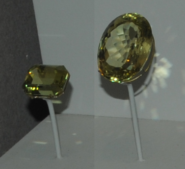
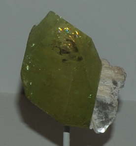

These samples of Brazilianite are displayed in the Smithsonian Museum of Natural History. Brazilianite is a phosphate mineral of aluminum with the composition NaAl3(PO4)2(OH)4. The sample at left is about 20 cm across and is from Conselheiro Pena, Minas Gerais, Brazil.

These Brazilianite gems are 16.6 and 41.9 carats from Minas Gerais, Brazil.

This sample is Brazilianite with muscovite from Conselheiro Pena, Minas Gerais, Brazil. It is about 4cm across.